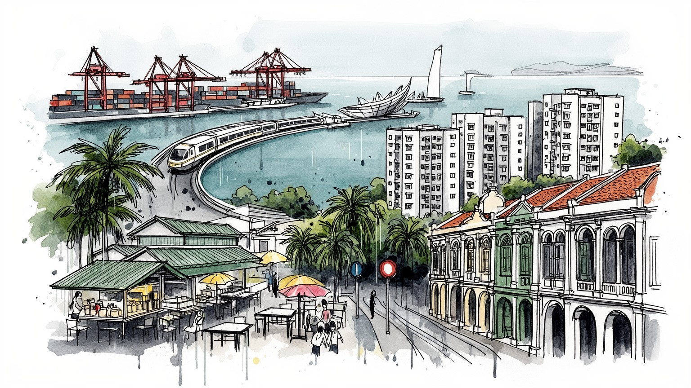
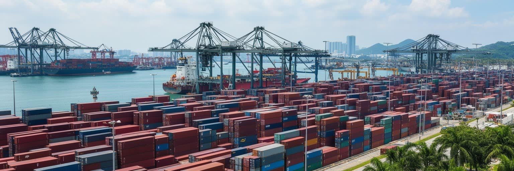
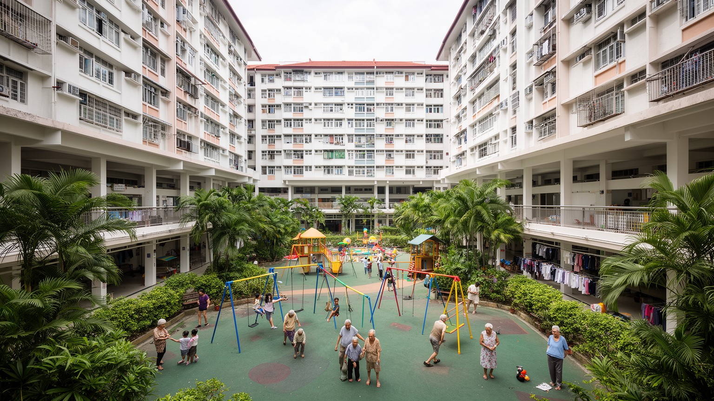
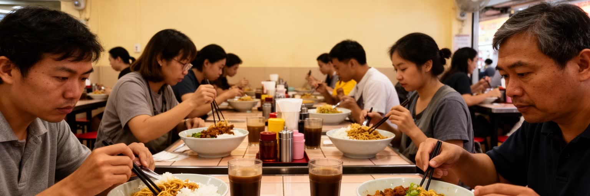
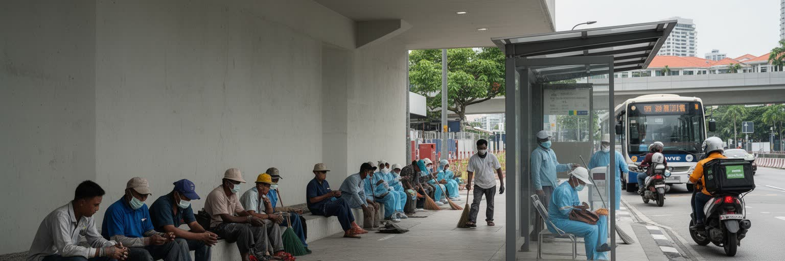
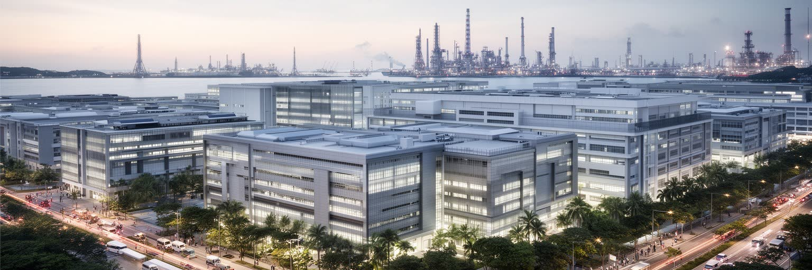
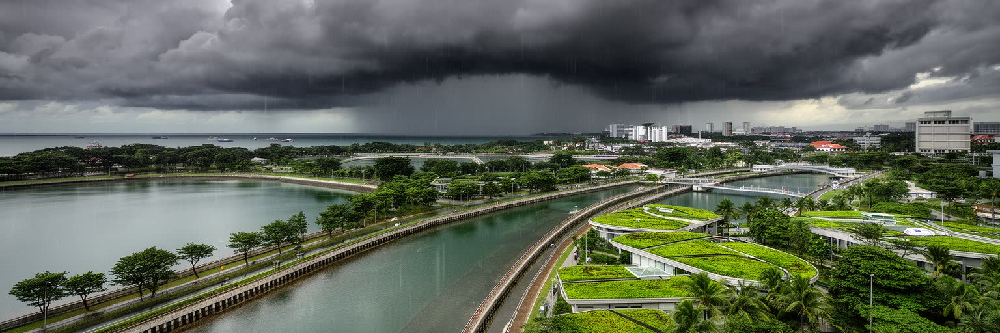
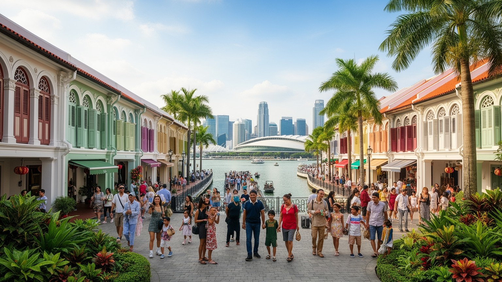
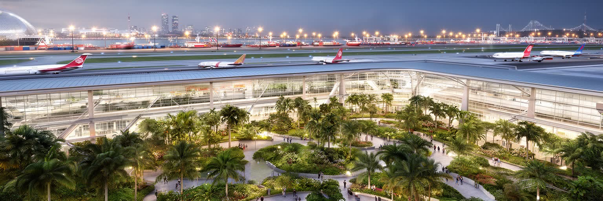
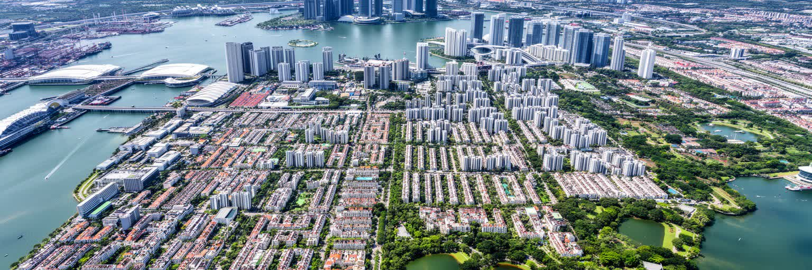

地政学
海峡を押さえる港と空港は、燃料、食料、半導体、人の移動を結びます。隣国との水、煙害、越境通勤も安全保障で、MRTの音が通勤を運ぶ日常と外交は近く接しています。小さな島の暮らしは、航路と制度に支えられています。

🇸🇬 シンガポール / アジア / World City Atlas
海峡、港湾、空港、金融、住宅政策、多民族社会が一つの島に圧縮された、東南アジアの都市国家。
都市の骨格
小さな島は、マラッカ海峡とシンガポール海峡、港と空港、金融と法制度、住宅政策と多民族社会を重ねて世界へ開いています。

海峡を押さえる港と空港は、燃料、食料、半導体、人の移動を結びます。隣国との水、煙害、越境通勤も安全保障で、MRTの音が通勤を運ぶ日常と外交は近く接しています。小さな島の暮らしは、航路と制度に支えられています。
金融、港湾、航空整備、研究開発の高賃金職の下で、建設、清掃、介護、屋台を移民労働が支えます。休日のリトルインディアや公園には、送金、祈り、サッカーで休む姿もあります。労働の層が都市の速度を作ります。
華人、マレー系、インド系の祈りは、旧正月、ハリラヤ、ディーパバリ、タイプーサムで街に現れます。ホーカーの香辛料、寺院の鐘、モスクの礼拝が近くで響く暮らしです。祝祭は買い物と家族の時間も動かします。
HDB団地、学校、ウェットマーケット、ホーカーが暮らしの半径をつくります。子どもは教育競争の中で学び、高齢者は公園運動や朝市で会い、観光客は湾岸と民族街を巡ります。湿気と雨、列車音も街の記憶になります。
シンガポールはマレー半島の南端に位置し、マラッカ海峡から南シナ海へ抜ける船の流れを受け止めます。国土は小さいが、世界のコンテナ、エネルギー、部品、食料が通る航路の近くにあり、その位置が都市の政治判断を鋭くしています。水、電力、食料、労働力を外部に依存しながら、港湾、空港、金融、法制度、軍事協力を組み合わせて自立性を高めてきました。隣国マレーシア、インドネシアとの関係は、橋やフェリーの往来だけでなく、領海、環境、越境通勤、煙害、水供給にも及びます。都市の高層景観を眺めるだけでは、島が常に周辺地域と交渉し、航路の安全と国家の脆弱性を同時に抱えていることは見えにくいです。シンガポールの強さは閉じた都市国家の孤立ではなく、周辺の海と半島を読む能力にあります。港の位置、海軍基地、空港の滑走路、埋立地の拡張は、すべて安全保障と都市計画を結びつける選択です。海峡を通る船が増えるほど、事故、汚染、緊張のリスクも増すため、管理能力そのものが国の信用になります。島の地理は、繁栄の条件であると同時に、油断すれば弱点にも変わります。周辺国との緊張を避けながら通商の自由を守るため、外交は常に実務的で慎重です。海峡の安全、海賊対策、海底ケーブル、燃料供給は日々の生活から遠く見えますが、物価と雇用を支える基盤です。都市は海を眺めるだけでなく、海によって試され続けています。

シンガポール港は、都市の中心から少し離れた場所で巨大な物流の時間を刻んでいます。コンテナ船はここで積み替えられ、東アジア、南アジア、中東、欧州、豪州へ向かう航路が再編成されます。単に荷物を置く港ではなく、燃料補給、船舶管理、保険、金融、通関、修理、海事法務、データ管理が結びつく複合産業です。港の効率は、狭い国土で道路混雑や住宅地との衝突を抑えながら、世界市場の遅れを減らす技術によって支えられます。トゥアス方面への港湾機能移転は、古い港湾用地を都市開発へ回すだけでなく、自動化と大型船対応を進める国家的な再配置でもあります。クレーン、ヤード、タグボート、管制室で働く人びとの仕事は、観光客の目に入りにくいが、都市国家の収入と信頼を支えます。港湾の競争相手は周辺国にも多く、料金だけでなく、処理速度、政治的安定、法的予見性が選ばれる理由になります。物流の強さは雇用を生む一方、危険物、排出、海上事故への備えも求めます。港は都市の華やかな湾岸とは別の顔を持ち、世界の在庫を日々動かす実務の場所であり続けています。倉庫や冷蔵施設、税関、船員支援、港湾労働の訓練も含めて、港は目に見えない専門職の集積で動きます。荷役の自動化が進んでも、機械を保守し、情報を照合し、緊急時に判断する人の仕事は残ります。物流都市の強さは、速度と信頼を同時に守る細かな手順にあります。
シンガポールの金融街は、東南アジアの資金、保険、投資、貿易決済を扱う窓口です。多国籍企業の地域本部、銀行、資産運用会社、法律事務所、会計事務所が集まり、英語で運用される契約、裁判、仲裁、規制が都市の競争力になります。資源をほとんど持たない国にとって、信用できる制度は港や空港と同じインフラです。企業はここを通じてインドネシア、マレーシア、ベトナム、インド、中国、豪州を見渡し、政治的な安定と迅速な行政を評価します。一方で、金融の集中は高所得層を呼び込み、住宅費や生活費を押し上げる力にもなります。税制、移民政策、資本規制、反マネーロンダリング対策は、都市の評判と社会の公平さを同時に左右します。金融街の高層ビルだけを見れば国際都市の成功が目立つが、その成功は制度への信頼、厳格な管理、専門職教育、言語能力、周辺市場への近さによって組み立てられています。法制度は中立的な舞台であるように見えながら、どの産業を誘致し、どんな労働力を受け入れ、どのリスクを排除するのかを決めます。都市の富は数字だけでなく、信用を生産する日々の事務と判断から生まれています。裁判外紛争解決や海事仲裁の機能は、港湾都市としての歴史とも結びつきます。金融の透明性を保つ努力は国際評価を高めるが、資産格差や外国資本への依存をめぐる不安も消えません。制度への信頼は、成功の道具であると同時に、市民生活への説明責任を求める圧力にもなります。

シンガポールの暮らしを理解するには、HDBと呼ばれる公共住宅団地を避けて通れません。高層棟の足元には小学校、保育施設、診療所、食堂、ウェットマーケット、バドミントンのコート、公園の運動器具が置かれ、子どもと高齢者の一日が近い距離で交差します。朝はMRTの到着音とエレベーターのチャイムが通勤通学を急がせ、夕方には塾帰りの制服、買い物袋を持つ祖父母、ジョギングする住民が屋根付き通路を行き交います。住宅は資産形成の手段であると同時に、民族比率、家族政策、高齢化対応を組み込む公共制度です。共用デッキでは旧正月の飾りやハリラヤ前の買い物、葬儀のテント、地域行事が同じ場所に現れ、生活の節目が団地の足元で共有されます。教育競争は家庭の時間を圧迫し、若い世代には価格上昇が重く、単身者や移民労働者の住まいは選択肢が限られます。それでも団地の市場やベンチは、湿気のある朝に野菜の匂いと会話が混じる生活の中心です。清潔で整った空間は安心を生む一方、規則や監視の感覚も伴います。買い物、通院、通学、運動が徒歩圏に置かれるため、団地は寝る場所ではなく、年齢や所得の差を日々調整する生活単位になります。雨を避ける通路や小さな売店の明かりは、都市政策が身体に触れる場所です。狭い島では、ベンチの配置や市場の営業時間までが、孤立を防ぐ小さな福祉になります。

ホーカーセンターは、シンガポールの日常を最もよく映す場所の一つです。チキンライス、ラクサ、ナシレマ、ロティプラタ、サテー、豆花が一つの屋根の下に並び、唐辛子、ココナツ、揚げ油、甘い kopi の匂いが湿った空気に混じります。朝食、昼休み、学校帰り、夜食まで使われ、安く早い食事はHDB生活と職場の時間を支えます。店主の高齢化、家賃、衛生規制、長時間の仕込みは、食文化の継承を労働問題にも変えます。隣のウェットマーケットでは魚の氷、青菜、香辛料、花が並び、現金商いと電子決済が同じ通路で動きます。朝の買い物では高齢者が値段を尋ね、夕方には子どもが甘い飲み物を持ち、夜には屋台の明かりが残業帰りの人を呼びます。観光客は名物の列に目を向けますが、核心は毎日食べ続けられる価格、宗教に応じた選択、相席の作法にあります。皿を返し、席を探し、雨音を聞きながら食べる時間に、多民族都市の公共性が現れます。料理名は移民の記憶を運び、同じ一皿にも店ごとの家族史があります。屋台の会話は英語だけでなく複数の言葉が混じり、新聞やスマートフォンのニュースを読みながら食べる人も多いです。食事の安さは都市の寛容さに見えますが、低い利幅を誰が負担するのかという問いも残します。夜の片づけの水音まで含めて、食は観光名物より広い路上経済です。
シンガポールでは、寺院、モスク、ヒンドゥー寺院、教会が短い距離に並ぶ街区が珍しくありません。旧正月には赤い飾りと贈答品が市場を満たし、ハリラヤには家族の訪問と菓子、ディーパバリにはリトルインディアの灯り、タイプーサムには祈りの行列が街を動かします。仏教、道教、イスラム教、ヒンドゥー教、キリスト教、無宗教の人びとは、学校、団地、職場、食卓で互いの暦と食の禁忌を意識します。英語、マレー語、中国語、タミル語が制度に置かれ、日常では複数の言葉が混じります。寺院の鐘、礼拝の呼びかけ、花輪の香り、線香、祝祭前の買い物袋は、管理された都市にも厚い感覚の層があることを示します。国家は民族調和を重視し、住宅や教育、宗教集会、差別表現を細かく管理してきました。その仕組みは衝突を抑えますが、表現の自由や少数派の声の届き方には緊張も残ります。祝祭は観光の彩りではなく、買い物、祈り、家族、街路経済を同時に動かす生活の技術です。保存された民族街も、礼拝、送金、食事、髪飾りや服の商いが続く現役の生活圏です。祝祭の前後にはメディアが交通規制や公共マナーを伝え、学校では友人の休みや食事を通じて違いを学びます。秩序だった共存は自然に生まれるのではなく、家庭、商店、宗教施設、行政が毎日調整する営みです。行列の音、甘い菓子、布地の色は、統計では見えない都市の記憶です。

シンガポールの高層住宅、地下鉄、道路、清掃、介護、飲食、物流は、多くの移民労働者に支えられています。建設現場や造船所では南アジアや東南アジアから来た労働者が働き、家庭内では住み込みの家事労働者が子どもの送迎や高齢者介護を担います。日曜のリトルインディア、ゲイラン、海沿いの公園には、送金、祈り、安い食事、サッカーの試合、友人との通話で休日を取り戻す人びとが集まります。専門職の移民も金融、技術、医療、教育で都市を動かしますが、低賃金層はビザ、仲介料、寮の距離、医療へのアクセスに縛られやすいです。夜の清掃や屋台の片づけ、早朝の資材搬入、湿った制服のままの移動は、観光客の時間帯から外れた都市の労働です。感染症流行時には労働者寮の過密が可視化され、成功の足元にある不平等が問われました。清潔で速い都市を評価するなら、その速度を担う人の休息、尊厳、安全も同じ地図に置く必要があります。休日の広場は単なる余暇ではなく、母語、宗教、音楽、食事を通じて都市の中に居場所を作る時間です。市場の裏口、工事用フェンス、深夜バス停、送金店の列をたどると、国際都市の便利さが労働時間のずれで支えられていることが分かります。彼らの休日は、都市が許す範囲の中で尊厳を取り戻す貴重な時間です。公園の草地や駅前の歩道は、休息と管理がせめぎ合う場所にもなります。

シンガポールは製造業を捨てた都市ではなく、半導体、精密機器、バイオ医薬、化学、データセンター、航空整備など、土地当たりの価値が高い産業を選び抜いてきました。工業団地、研究機関、大学、病院、港湾、空港が近く、試作、輸入、輸出、規制対応を短い距離で結べることが強みです。大学とポリテクニック、職業訓練、英語教育は人材供給の柱で、家庭では進学競争と塾通いが子どもの時間を圧迫します。メディアや公共キャンペーンは、技能更新、健康、節水、多文化共生を繰り返し伝え、国家の課題を日常の行動へ落とし込みます。高度産業は高賃金を生む一方、専門人材と単純労働の差を広げる可能性もあります。ジュロン島の石油化学、バイオポリスの研究棟、チャンギ周辺の航空整備は、湾岸観光とは違う働く都市の景観です。小さな島で研究施設、工場、住宅、緑地をどう配分するかは、教育、雇用、環境を結ぶ戦略的な判断です。産業政策は市場任せではなく、学校制度、奨学金、移民管理、企業誘致を組み合わせる長い調整です。若者は資格と語学で上昇を目指し、親は教育費を負担し、企業は海外人材も呼び込みます。成功の物語は勤勉さを強調しますが、競争が心身の負担や階層差を広げる面も見逃せません。都市の教育は希望であり、同時に失敗を恐れさせる大きな圧力でもあります。

赤道近くのシンガポールは、年間を通じて高温多湿で、午後には雲が急に黒くなり、舗道をたたくスコールが来ます。雨上がりの熱気、濡れた街路樹、排水溝の水音、MRT車内の冷房の差は、都市を歩く感覚そのものです。雨は多いが、国土が小さいため水を貯める面積は限られ、輸入水、貯水池、再生水、海水淡水化を組み合わせた政策が安全保障になっています。街路の排水、運河、公園、建物の緑化は、景観ではなく熱と洪水を抑えるインフラです。暑さは屋外労働者、高齢者、通学する子どもに重く、屋根付き通路や木陰、公園運動の時間帯も生活の公平さに関わります。夕方のランニングやマラソン大会は、暑さを避ける身体の知恵とも結びつきます。海面上昇は港湾、空港、埋立地、沿岸住宅に長期的なリスクをもたらします。冷房、データセンター、石油化学、航空需要は都市の快適さと排出の矛盾を示します。水と気候の管理は、島の未来を左右する最も具体的な政治です。ホーカーの湯気、濡れた傘、地下駅へ流れ込む人波は、気候が都市のリズムを決めていることを示します。涼しい屋内に入れる人と屋外で働く人の差も、暑さの政治を具体的にします。雨具、冷房、木陰は、誰もが毎日使う身近な適応の道具です。貯水池や再生水への信頼は、技術だけでなく教育と広報によって支えられています。

シンガポール観光は、マリーナベイの夜景、庭園、動物園、リゾートだけでなく、F1の市街地コース、ナショナルスタジアムのサッカー、マラソン、公園の太極拳やランニングにも表れます。夜は屋台の明かり、クラブ、ライブハウス、ホテルのバー、川沿いの音楽が重なり、湿った風に香辛料と排気の匂いが混じります。Orchard Roadの商業施設は国際ブランドを集め、チャイナタウン、カンポン・グラム、リトルインディア、カトンでは織物、金製品、菓子、香料、土産物が生活と観光を結びます。都市は安全で移動しやすいですが、その便利さは規則、清掃、交通管理、メディアで共有される公共マナーに支えられます。観光産業はホテル、警備、飲食、交通、展示会を通じて雇用を生みますが、低賃金の仕事も少なくありません。夜景と民族街を往復すると、商品化された文化と続いている生活の境目が見えてきます。買い物袋、雨傘、スマートフォンの地図、屋台の番号札が、整った都市の中にある雑多な移動を具体化します。イベントの華やかさは国際都市の顔を作りますが、深夜の交通、警備、清掃、音量規制がなければ続きません。観光の楽しさは、働く人、暮らす人、遊ぶ人の時間が同じ街路で重なるところにあります。買い物と夜遊びは、整然とした都市の別の熱気を見せ、日常も残ります。

チャンギ空港は、シンガポールのもう一つの港です。航空路は人、貨物、会議、医療、教育、観光を短時間で結び、都市国家の小ささを世界への近さへ変えます。空港は単なる交通施設ではなく、商業施設、庭園、ホテル、物流、航空整備、保安、データ管理が重なる都市装置であり、国の第一印象を演出する場所でもあります。海港が重い貨物とエネルギーを扱う一方、空港は高価で時間に敏感な部品、医薬品、ビジネス客、乗継客を動かします。二つの結節点があることで、シンガポールは周辺国の市場を支えるだけでなく、危機時の迂回路や供給拠点にもなれます。感染症や国際紛争、燃料価格の変動は航空需要を直撃し、観光、ホテル、飲食、展示会、航空整備の雇用に波及します。接続性の高さは強みですが、外の世界の混乱を速く受け取る弱さでもあります。空港で働く保安員、清掃員、整備士、客室乗務員、物流担当者は、都市の国際性を具体的な労働として支えます。海と空の動きを合わせて見ると、シンガポールは一つの島でありながら、世界の移動時間を短く編集する機械のように機能しています。空港周辺の産業は貨物倉庫、機内食、訓練施設、ホテル、展示会場まで広がり、東部の都市構造を形づくります。乗継客の便利さは、保安と効率を両立させる運用能力に依存します。空と海の結節は、都市の規模以上の影響力を与えています。

シンガポールは、経済規模や清潔な景観だけで理解できる都市ではありません。海峡の地政学、港湾物流、空港、金融、法制度、高付加価値産業、公共住宅、ホーカー文化、多言語社会、宗教の近さ、移民労働、水と気候の管理、土地不足が一つの島に重なっています。湾岸の夜景は成功の象徴ですが、団地の市場、教育競争に向かう子ども、公園で運動する高齢者、休日の移民労働者、夜のライブや屋台、買い物客で混む民族街も同じ都市です。MRTの発車音、スコールの湿気、香辛料、冷房、スマートフォンで読むニュースが、制度の強さを身体感覚に変えます。効率的な管理は暮らしを便利にしますが、表現の自由、労働者の権利、格差、文化保存をめぐる緊張も生みます。スポーツ大会や祝祭は一体感を作り、住宅価格や老後の不安はその足元を揺らします。便利さと管理、豊かさと負担を同時に読むことで、この都市国家の輪郭は立体的になります。小さな島の成功は、誰が時間を節約し、誰が見えにくい労働を引き受けるのかという問いも残します。メディアが描く清潔で効率的な都市像の外側に、湿気に疲れる通勤、香辛料の残る服、試験前の家庭、休日の送金、夜の音楽があります。それらを合わせて見ると、制度と生活の距離が近い都市だと分かります。成功の光と生活の手触りを同じ高さで見る必要があります。